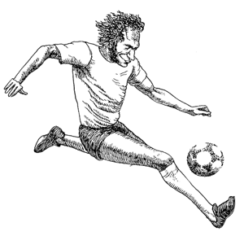

Пятнистые сердца четырех
Шизокомментарий актуального футбола. В беседе принимают участие Владимир
Костюков, один из ПГ-художников, Сергей Карапетян, общественный
ПГ-активист, Антон Черняк, художественный ПГ-редактор, и Александр
Дельфин, ПГ-редактор.
Вступление.
Четверо за столом. На столе - карты, деньги, два ствола.

Александр Дельфин. А помнишь, мы с тобой придумали какое-то
начало, что нужно все как-то связать с Пушкиным?
Владимир Костюков. Пушкин будет по ходу. А мы говорили про какой-то
план, насчет случаев, связанных с футболом. Что касается Пушкина, то с
ним связан скорее матч сборной России и сборной Франции...
А.Д. Во-во-во, точно! Мы с этого начнем. Это объясняет, почему
мы говорим о футболе. Вот это причина - что мы пережили победу сборной
России в этом матче, числа не помню...
В.К. Отборочный матч Чемпионата Европы в канун двухсотлетия
со дня рождения Александра Сергеевича Пушкина. Замечательная победа в интригующей
игре расценивается нами как ответ Дантесу.
А.Д. Ну, а поскольку это радостные события - победа сборной,
открытие новой ПГ-рубрики, - то и поговорим мы о приятном. А нет ничего
более радостного и приятного, чем воспоминания детства. Самое правильное
будет пройтись по кругу. Я могу начать.
История Дельфина: "Запасной коробочный вратарь".
А.Д. Футбол - это единственный вид спорта, которым я занимался...
А, нет, был еще скейтборд, но это отдельно. Когда будет ПГ-Скейтборд. А
футболом я занимался в школе. Однажды к нам пришел такой мужчина лет тридцати
пяти, с тяжелым подбородком, со много раз перезашитым лицом. Было видно,
что сердце у него суровое, но доброе. Некоторое время он следил за нашими
занятиями физкультурой, а потом сказал, что в школе открывается секция
футбола. Он, кстати, был самым настоящим футболистом, там звучало что-то
вроде "Торпедо" или "Локомотива", не помню.
Антон Черняк. Володя, кстати, играл за "Торпедо".
А.Д. А у меня был бзик - я очень любил хоккейных вратарей, но
на коньках кататься не умел, и любил Мышкина очень из московского "Динамо".
Но в хоккей играть я не мог, и в футболе попробовал стать вратарем, естественно.
Начались отборочные игры в секцию. Мы играли, играли, а этот человек стоял
за бортом на коробочке и смотрел, производил отсев. Я пытался выслужиться.
Падал в ноги нападающим, хавал пыль. А у нас на коробочке еще можно было
играть, а на большом школьном поле был асфальт. Там тоже были игры, и там
я боялся прыгать. А когда мне там засветили в лоб мячом со всего размаха,
я вообще на этом поле постоянно испытывал чууство нэлоукости. Зато на коробочке
выкладывался, и в какой-то момент меня "отобрали", со странным статусом
таким типа "запасной вратарь, если играют на коробочке".
В.К. ЗапКорВр. Запасной коробочный вратарь.
А.Д. ЗапКорВрат.
В.К. Вратарь обычно в прессе - Вр. Сокращается.
А.Д. И там потом были странные моменты. Я участвовал в двух
официальных матчах, но оба раза меня играть не выпускали, а потом мы играли
на большом поле и там меня неожиданно поставили играть, потому что один
из наших полузащитников не пришел. Я стал бегать, а бегал я плохо из-за
слабого дыхания, и в какой-то момент оказался один в центре поля. И тут
случился мой героический момент. Мне неожиданно пасанули, и я ломанулся
вперед. Передо мною почему-то оказались самые слабые игроки противника,
и я их почти всех лихо так обвел. И оказался один на один с вратарем. Мне
вдогон бежит такая толпа всех наших футбольных звезд, и все кричат: "Бей,
бля!" - и я так бью. И спотыкаюсь в этот момент, обводя последнего защитника,
мяч уже откатывается в сторону, и тут вратарь падает прямо передо мной,
обманутый каким-то движением, осталось только перекинуть мяч через него,
но я уже не успеваю ударить, потому что сам заваливаюсь куда-то вбок. И
только носком легонько перекидываю. И мяч медленно прыгает к линии ворот.
Вратарь поднимает голову, оборачивается и успевает достать мяч на линии.
И все так: "Аах!". И после этого я был посрамлен и поруган одноклассниками
так, что моя футбольная карьера закончилась.
В.К. А откуда у вашего тренера были шрамы на лице?
А.Д. Это загадка, но как-то он был побит. И в конце концов отобрал
одного человека со всей школы в какую-то спортшколу.
История Антона Черняка: "Предпочитаю ручные игры".
А.Ч. Ну что, кто следующий? Я могу рассказать. Я играл в футбол
в основном на коробочке. Ну и обычно зимой, потому что летом на коробочке
собирались те, кто умел играть, а зимой обычно играли те, кто не умел.
Зимняя поверхность скрадывала технические недостатки и скольжение уравнивало
всех играющих.
В.К. А ты на какой позиции играл?
А.Ч. Я играл на разных позициях, но больше всего не любил быть
именно вратарем, потому что не любил, когда расстреливают. Боялся этого
и любил больше бегать.
В.К. ЗимКорВр перечеркнутое.
А.Ч. Вот. Ну а летом я смотрел часто, как играют на коробочке
у нас. Ходил специально смотреть, играл обычно Володя, а я был зрителем.
У нас там проходили мощные баталии. С Володей мы дружили, но и Вася [Вася
Смирнов, художник, один из участников арт-ансамбля FENSO - ПГ] тоже часто
играл на нашей коробочке.
В.К. Вася - вредитель.
А.Ч. Он наиболее экстравагантно выглядел и всегда его вид вызывал
веселье. Он выходил играть в шортах с плодами земляники изображенными.
Наводил восторг. И у Васи была очень экстравагантная манера игры.
В.К. Вася пытался эффектно сыграть - какие-то мягкие крученые передачи,
особая техника паса и обводки, которую он пытался воплотить, но, конечно,
этой техники не доставало у него. И он немного забывал, что футбол - это
командная игра. И разум его на поле был атрофирован обычно. Зато очень
смешно было. И все равно с Васей было крайне приятно играть. В МАХУ мы
очень часто играли.
А.Ч. Да, это тоже был мощный ряд футбольных баталий в МАХУ -
в художественном училище пятого года, где мы обучались, в период большой
перемены постоянно проводились матчи, в которых участвовали многие персонажи,
в том числе Вася Смирнов все тот же был активным участником. Саша Ширнин,
один из лидеров группы "Корабль". И постоянно приезжал Володя к нам.
В.К. Сашу Ширнина хочу отметить. На общем фоне присутствующих
тогда на поле в МАХУ он выглядел наиболее достойно. Еще был такой персонаж,
как Небольсин - очень маленький и очень заводной.
А.Ч. Я в основном был наблюдателем, потому что сам обычно предпочитал
ручные виды спорта, в том смысле, что игры с мячом руками - волейбол, баскетбол
и т.п. Но часто бывал футбольным зрителем, потому что играли мои друзья.
А вот по телевизору редко смотрю футбол, больше люблю либо участвовать,
либо чтобы были знакомые люди. Странный угол зрения. Хотя в последнее время
больше появилось интереса, возможно, в связи с тем, что и футбола стало
больше в информационном пространстве.
А.Д. Наверное, мы стареем.
А.Ч. И скоро я буду засыпать за футбольчиком, почесывая живот.
А.Д. Как мой дядя, который смотрел футбол, стоя на стуле на
коленях, на стол клал подушку для живота и еше одну - для локтей, и так
наслаждался.
А.Ч. Да, это чистая медитация. Медитация с футболом и двумя
подушками.
История Володи Костюкова: "Мне улыбалась Бонни Тайлер".
В.К. В общем, никакой тайны тут нет, просто в детстве я занимался
футболом. Заняться им я хотел уже с раннего детства, но почему-то меня
отдали сначала в плавание. В шесть лет я чуть не утонул, и мне пришлось
пару лет заниматься плаванием, и только в возрасте десяти лет начался футбол.
Начинать желательно чем раньше, тем лучше, но даже лет в тринадцать-четырнадцать
может еще не поздно быть, если, правда, ты уже играешь и какое-то отношение
к этому имеешь. Были такие ребята, которые поздно начинали. И которые добивались
чего-то. Но обычно в спортивные школы с семи-восьми лет наборы. Вот. Когда
Дельфин рассказывал про отбор в школьную команду, я вспомнил, как проходил
отбор в клуб "Москвич", в котором я тоже участвовал. "Москвич" - это футбольный
клуб от завода АЗЛК, в то время была даже команда мастеров, которая играла
во второй лиге. Ну и та же самая история: много детей каких-то и "наблюдатели".
Такой бесформенный футбол, толпа носится по полю. Те четыре-пять человек,
которых в тот день отобрали, это были самые грязные, с головы до ног искупавшиеся
в луже, самые страстные, люди, которые совершенно не жалели себя. При этом
я старался тогда играть в конструктивный футбол, как-то открываться в нужный
момент, но не лезть в толпу, бесконечную мясорубку. Меня не взяли. Один
мальчик был весь грязный. Играли мы после дождя, и он искупался в луже.
Его взяли.
А.Ч. Так называемая "грязевая прописка".
В.К. У многих тренеров такой подход, не знаю, как на Западе,
а у нас так. Я занимался в юношеской команде "Смена", играл вместе с Димой
Хлестовым, который в настоящее время является игроком "Спартака" и Сборной
России. Особенно мне про него нечего вспомнить, единственное, что помню,
когда я перешел в "Смену" из другой команды, а до этого я играл в "Торпедо",
то Дима Хлестов был первый игрок этой команды, которого я увидел. Минут
за сорок, за час до тренировки где-то на территории стадиона он тусовался.
Ждал тренировки. Я тоже в первый раз подъехал пораньше и наблюдал за ним
какое-то время. И он стал впоследствии единственным игроком нашей команды,
чего-то добившимся в большом футболе. Зато я вспомнил смешной момент, связанный
не непосредственно с Димой Хлестовым, а с его папой. У него был интересный
папа, очень приятный мужчина, который работал на заводе АЗЛК. Это было
время перестройки, год 86-87, программа "Взгляд" появилась не так давно,
гласность. По-моему, в субботу или пятницу "Взгляд" шел, на следующий день
у нас была игра, а в передаче показывали интервью с завода АЗЛК, и мы вдруг
видим Диминого папу, который чудовищным бипом кроет, потому что там чего-то
не заплатили или еще что-то.
А.Ч. А расскажи про Бонни Тайлер.
В.К. Да, у меня была замечательная встреча с Бонни Тайлер, конечно.
Это связано с закрытым Олимпийским манежем, где все та же команда "Смена"
проводила тренировки. Манеж был разделен на две части, с одной стороны
проводились концерты, с другой тренировались спортсмены. По времени наша
тренировка соответствовала концерту Бонни Тайлер. Вот. И уже концерт закончился,
а тренировка наша продолжалась еще, и вдруг открывается дверь в такой огромной
серебряной стене, которая перегораживала Олимпийский, и она выходит. В
каком-то серебряном костюме. Такая ситуация. То ли ей специально кто-то
мяч подбросил, то ли нет, но она его как-то слету довольно ловко отбила
и прошла где-то метрах в трех от меня и улыбнулась. Мне было очень приятно.
Она мне улыбнулась.
А.Ч. Бонни Тайлер - полярная сова, она умеет летать по воздуху.
А.Д. Я тоже смотрел с ней один раз по телевизору интервью, и
мне показалось, что у нее вообще нет нижней половины тела, а вот как показывают
в одном клипе на MTV, просто штырь и провода.
А.Ч. Они с Копперфильдом любят летать вместе.
В.К. Я бы ей забил тогда, но она куда-то исчезла. Не без помощи
этого еврея Копперфилда, наверное. Такая, в принципе, шутка... возможно.
История Сергея Карапетяна, самая короткая: "Со мной играл
лучший футболист России".
Сергей Карапетян. Когда я учился в первом классе, у нас рядом
с домом была секция, манеж футбольный, и меня папа туда отвел. Я отбор
прошел. Это лотерея. Такой толстый тренер вышел, с пузом, Анатолий Федосеевич
Королев.
А.Д. Ты первый, кто назвал имя первого тренера.
С.К. Ну, это незабываемо. Он такой лысенький был... Что из воспоминаний?
Помню, со мной играл Егор Титов, лучший футболист России 98 года. Он у
меня как-то раз пачку вкладышей помыл.
А.Д. Это в той школе было?
С.К. Да, в "Спартаке". И я очень разочаровался, потому что увидел:
чтобы стать футболистом, надо перешагивать через трупы. Очень жесткая конкуренция,
дедовщина, как в армии, и все зависит от тренера, а не от тебя. От отношений
с тренером.
В.К. Да, когда я играл, тоже замечал, что были любимчики.
А.Ч. Нет, ну это неизбежно для командной игры, должен быть главный
человек, как дирижер. Понятно, что в этом случае тренер становится главным.
В.К. Все равно, тренер должен быть более тонким психологом.
У нас все больше похоже действительно на армейскую систему.
А.Д. У всех наших тренеров больше офицерский, а не артистический
вид. Это неправильно. Футбол - не война, а искусство.
С.К. Еще можно добавить, что футболисты, конечно, очень ебанутые
люди. Это основной момент. В общении невозможны, интересов нет, да и времени
нет на то, чтобы они сформировались. Я провел в "Спартаке" где-то года
два-два с половиной, а потом в школе играл, в команде "Сокол", но там все
попроще было.
А.Д. А какой твой лучший матч был?
С.К. С "Локомотивом", я забил гол. "Спартак"-"Локомотив", в
манеже был матч, встречался наш, 76 год, я вышел на замену и забил гол.
Это было очень давно. Потом я занимался велоспортом на треке, но однажды
полетел, и все - травма, бутсы на гвоздь...

Но то уже совсем другая история, как принято говорить, заканчивая детский
мультфильм. Пришла пора заканчивать и нашу беседу, открывающую новую ПГ-рубрику.
Довольно глупо было бы нам изображать футбольных аналитиков и оспаривать
лавры Маслаченко. Маслаченко, Перетурин, Вася Уткин и другие - это наша
гордость, наша слава, наша боль. А что же представляем из себя мы - обычное
шизоанализо несостоявшихся спортсменов и усталых фанатов? Все так, и все-таки
все это - удары в штангу. Просто после "дантесовского" матча Россия-Франция
даже слепой и глухой должны интересоваться футбольной игрой. Так считает
ПГ. Все, конец. До встречи на ВВВ!
|